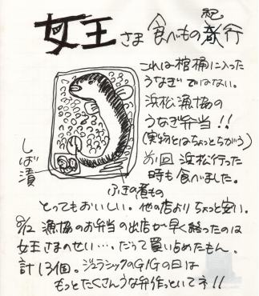

BACK TO

2001.08.12 浜松メイワン エアロホール
PARADISE MIXER SPESIAL
出演：/ VACUUM, SUNS OWL, PANORAMA AFRO,
OUTRAGE, DESSERT, ORANGE, メリケン, WATERMELON,
LIQUID VISION, DEVOLD, KNIT, クラミジア,
S.O.Y.L,JURASSIC JADE
●ＪＵＲＡＳＳＩＣ ＪＡＤＥ’Ｓ setlists
ドク・ユメ・スペルマ
Ｐｌａｓｔｉｃ Ｗａｔｅｒ Ｍｏｔｈｅｒ
Ｇ．Ｄ．Ｇ
Ｃａｎ Ｙｏｕｒ Ｂｉｒｄ Ｓｉｎｇ？
Ｔｈｉｓ Ｉｓ Ｍａ Ｓｏｎｇ
ＨＹＰＥＲＴＯＮＩＣ ＷＯＮＤＥＲＦＵＬ ＭＯＮＵＭＥＮＴ
Ｗｈｏ Ｓａｗ Ｈｉｍ Ｄｉｅ？
血がでるまで
ＴＨＥ Ｄ－ｄａｙ～精神病質～鏡よ鏡
Ａｆｔｅｒ Ｋｉｌｌｉｎｇ Ｍａｍ
●ＭＥＭＢＥＲ’Ｓ comment
ＨＩＺＵＭＩ
浜松“極楽祭”の感想
地元ＢＡＮＤがすんごーく頑張っていたのが、とっても良かった。だからツアーＢＡＮＤも皆、嬉しくやれました。お客さんも熱かった。（特にバキュームの人達は本当にお疲れさまでした。）
浜松は何しろラテン系が多いようで、打上げときたら、チンポ、チンポ、チンポ・・・。これ以上は書けません。
因みにキリンラガービール大ビンはもう呑みたくない。
だって・・・。キュッとしめてブラブラ・・・。
ＮＯＢ
すごい祭り!!!遠州名物になりそう。
ＶＡＣＵＵＭを、兄貴と慕う若い衆の頑張りに感動を覚えた。しばらく忘れていた何か（？）だ。はなから温度が違った。そのせいか、こんなに汗が滴り落ちたライブは、記憶にない。（ボケじゃなくって・・・。）
打上げは、珍（？）芸の嵐が吹き荒れ、異常なテンションだった。裸で歩き回っていた青年が、その後服を着ていると、かえって不自然に感じて、おかしかった。
またまた出入り禁止の店にしてしまったのでは・・・。
ＹＡＳＵＮＯＲＩ
ひずみさんプレゼントのうなぎ弁とてもうまかった。ちょうど腹ヘリピークでジャストタイミングで食べられ幸せでした。
大きい会場は苦手なのだが、気持ち良く演奏出来た。
ライブすべて終了する前に帰っちゃってすいませんでした。
ＨＡＹＡ
ライブも楽しかったですが、バキューム最高でした。あのイベントを企画そして仕切ってホントにお疲れ様でした。バキュームと浜松のみなさん最高に楽しく対バンもみんな良かったす。ありがとうございました。
OUTRAGEはまた10年たったらまた飲みましょう。
しかし、あのメチャこみのサウナ（健康ランドのこと）はいただけなかったっす。ねれねえっす。ライブとは関係ないっすけど・・・。
打上げは・・・途中で帰りましたが、ビールビンは初めて見た！入るもんですねぇ。
| JURASSIC JADEの先発隊（器材車）は１２日０：００に都内を出発しました。深夜にかかわらず、お盆の帰省でなかなかの交通量。５：００少し前に浜松インターに到着。 今日のお宿は「ヘルシー 愛ランド ハッピー」です。いわゆる健康ランドです。到着した時間が悪く、寝るスペースを、手に入れるのが困難でした。リクライニングのシート兼ベットは、おっちゃん達に完全に占拠されてます。ＨＡＹＡ・ＹＡＳＵＮＯＲＩはおばちゃん達のみのスペースに潜り込みましたが、叱られて追い出されてしましました。ＮＯＢは通路の壁に張り付いて惰眠をむさぼりました。 ちなみに、絵入り人間のＹＡＳＵＮＯＲＩは風呂にも入れない・アロハにも着替えられない。辛そうでした。 |
 |
BACK TO